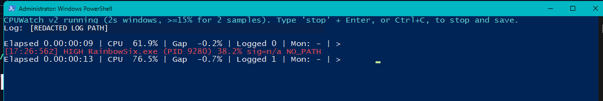

Sustained CPU activity
Monitors process CPU utilization over time and flags sustained resource usage for review rather than treating every brief spike as suspicious.
COMMAND-LINE TOOL / ENDPOINT MONITORING
A Windows process-monitoring utility that helps identify unexplained resource usage and collect evidence for further investigation.
OVERVIEW
I developed CPUWatch with AI assistance to help investigate unexpected background activity on my Windows PC, including possible resource-intensive malware or unauthorized cryptomining. It is a monitoring and evidence collection tool, not an antivirus engine.
Monitors process CPU utilization over time and flags sustained resource usage for review rather than treating every brief spike as suspicious.
Compares overall CPU activity with process-level measurements, taking interrupt and deferred procedure call activity into account.
Collects process identifiers, executable paths, parent-process information, digital signature status and file hashes for flagged activity.
Collects established TCP connection information associated with flagged processes to support investigation.
WORKFLOW
REPORTING
Displays runtime, total CPU utilization, unexplained CPU activity, and the number of recorded events while monitoring.
Writes UTC timestamps and process evidence periodically and on exit. The script also attempts to neutralize formula-like input in selected CSV fields.
The logs contain sensitive process paths, command lines and connection details. Review and redact them before sharing.
APPLICATION SHOWCASE

LIMITATIONS
High CPU usage and differences between performance measurements can occur for legitimate reasons. CPUWatch does not remove malware, verify every running process, or guarantee that a system is clean. Its observations support further authorized troubleshooting and security review.
LEARNING OUTCOMES